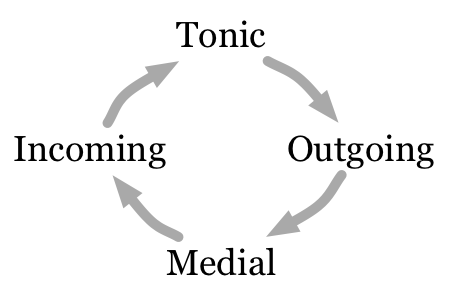

With popular music theory being a relatively new field and K-Pop music theory in particular being almost brand new, almost anything goes. Popular harmony and chord loops are a relatively well-studied area in popular music, so I will draw on those models, seeing how they apply (if at all) to K-Pop, building on them in the context of K-Pop, and using them as a basis for comparing K-Pop to Western pop.
Chord loops will be defined as any sequence of multiple chords that plays repeatedly with no changes (loops) at any part of the song. These are often 2 or 4 chords long, but can be longer.
Since K-Pop has strong Western roots, but grew as a genre catering toward a completely different audience, I believe a comparison of their compositional styles and techniques may helpful or useful for future theorists to build off of.
I hypothesize that the K-Pop music of each "generation" will use some similar loops to whatever Western music was popular at that time, but that as time progresses, chord loops idiomatic to the K-Pop industry and genre will develop and become increasingly common.
If this is correct, then it shows that, while having strong roots in Western hip-hop and pop, K-Pop has developed its own harmonic language separate from those roots.
If this is false, then it shows that the genre and industry has a lot more in common with Western pop than it may initially seem, and that our models for the latter can be more easily applied to the former.